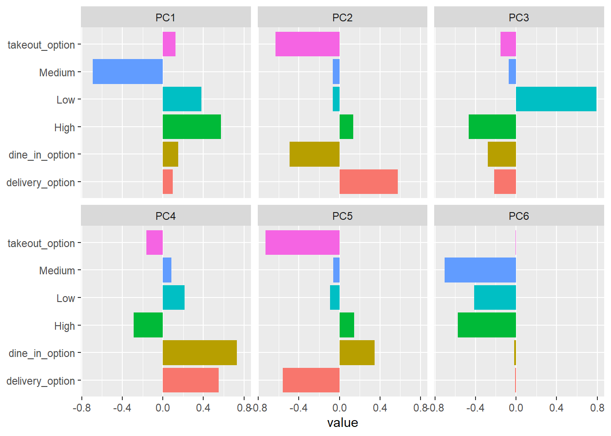

The dataset which will be used contains information about coffee shops in Ukraine. I will determine the market segments in this market along with the key features so this can be presented to the marketing team. I will focus initially on data wrangling to get the dataset in shape for modeling, then will dive deep into principal component analysis to determine the key market segments.
Understanding our data
# The code below will produce an interactive table using the datatable package
df_clean <- df_clean %>%
select(-place_name) %>%
mutate(region = as.factor(region)) %>%
mutate(place_type = as.factor(place_type))
# Below code removes irrelevant data point related to an appliance repair service
# Dine in option describes whether there is (or isn't) a delivery option so will set missing values as FALSE
# Take-out option describes whether there is (or isn't) a Take-out option so will set missing values as FALSE
# Below code categorises price into Low, Medium, and High
df_clean <- df_clean %>%
filter(!place_type == "Appliance repair service") %>%
mutate(dine_in_option = if_else(is.na(dine_in_option),FALSE,TRUE)) %>%
mutate(takeout_option = if_else(is.na(takeout_option),FALSE,TRUE)) %>%
mutate(delivery_option = if_else(dine_in_option == FALSE & takeout_option == FALSE, TRUE, delivery_option)) %>%
mutate(price = if_else(price == "$", "Low", price)) %>%
mutate(price = if_else(price == "$$", "Medium", price)) %>%
mutate(price = if_else(price == "$$$", "High", price))
Interactive map showing region details
# The code below will produce an interactive table using the datatable package. I also use basic JavaScript and CSS to style the table headers.
library(DT)
datatable(df_clean, options = list(
initComplete = JS("
function(settings, json) {
$(this.api().table().header()).css({
'background-color': '#009879',
'color': '#fff'
});
}")
))
Price categories histogram
# Plots a histogram of the different price categories
df_clean %>%
count(price) %>%
ggplot(aes(price, n, fill = price)) +
geom_col() +
ylab("Number within each price category")
Price category with missing values is big piece of the dataset.
Ratings distribution per region
# This will determine ratings distribution per region and arrange orderly by avg_rating so regions showing first are those with the lowest average rating
df_clean %>%
group_by(region) %>%
mutate(avg_rating = mean(rating)) %>%
ungroup() %>%
mutate(region = fct_reorder(region, avg_rating)) %>%
ggplot(aes(rating, fill = region)) +
geom_histogram() +
facet_wrap(~region) +
theme(legend.position = "none")
Rating appears to be influenced by region but not a main factor. However, variability shown by the disparity in range shows that there are potential other features that influence market segmentation. The boxplot below shows this more clearly.
Average rating per region
# Below code will produce a box plot
df_clean %>%
ggplot(aes(rating, reorder(region, rating, na.rm = TRUE))) +
geom_boxplot() +
ylab("region")

Average rating by price category
# Construct our plot using ggplot
df_clean %>%
group_by(price) %>%
summarise(avg_rating = mean(rating, na.rm = TRUE)) %>%
ggplot(aes(price, avg_rating, fill = price)) +
geom_col() +
ylab("Average rating") +
xlab("Price category")
Clearly, there is no significant difference in rating between the different price categories. NA category (i.e. missing) is slightly higher but not significantly.
Average review by price category
# Construct our plot using ggplot
df_clean %>%
group_by(price) %>%
summarise(avg_reviews = mean(reviews, na.rm = TRUE)) %>%
ggplot(aes(price, avg_reviews, fill = price)) +
geom_col()
This reflects that there is a much bigger segment of people who visit medium priced restaurants.
Total reviews by price category
# Construct using ggplot
df_clean %>%
group_by(price) %>%
summarise(total_reviews = sum(reviews, na.rm = TRUE)) %>%
ggplot(aes(price, total_reviews, fill = price)) +
geom_col() +
xlab("Price category") +
ylab("Total reviews")
Now I comfortable that there is no clear imputation of missing price categories so will remove from the dataset.
Total reviews by region
# Visualise total reviews by region to help us better understand the dataset
region_reviews <- df_clean %>%
group_by(region) %>%
summarise(total_reviews = sum(reviews, na.rm = TRUE),
avg_rating = mean(rating, na.rm = TRUE))
df_clean %>%
group_by(region) %>%
summarise(total_reviews = sum(reviews, na.rm = TRUE)) %>%
mutate(region = fct_reorder(region, total_reviews)) %>%
ggplot(aes(region, total_reviews, fill = region)) +
geom_col() +
coord_flip() +
xlab("Region") +
ylab("Total reviews")
Leaflet map
# Below code leverages the leaflet library. To set regions as markers in our map, I have sought the longitudes and latitudes from the Geodatos website as provided in the reference below.
library(leaflet)
sf <- data.frame(lng = c(35.04066, 36.25272, 36.25272, 33.39404, 30.5238, 24.02324, 37.5413, 30.74383, 34.55367, 35.11714),
lat = c(48.46664, 49.98081, 46.63695, 47.90572, 50.45466, 49.83826, 47.09514, 46.48572, 49.58925, 47.85167),
total_reviews = region_reviews$total_reviews,
popup = region_reviews$region,
region = region_reviews$region,
rating = region_reviews$avg_rating,
stringsAsFactors = FALSE)
# Below will add colors to the different regions and contrast will be higher by regions that have higher overall total reviews.
sf <- sf %>%
mutate(region = fct_reorder(region, total_reviews))
pal <- colorFactor(
palette = "YlOrRd",
domain = sf$region
)
# This is the final code to construct the map using the lng, lat.
leaflet(sf) %>%
addTiles() %>%
addCircleMarkers(lng = ~lng,
lat = ~lat,
weight = 20,
radius = ~ log(sf$total_reviews),
color = ~ pal(region),
label = paste(" Region = ", sf$region, ",",
"Total Reviews = ",sf$total_reviews,",",
"Average Rating = ", round(sf$rating,1))) %>%
addLegend(position = "bottomleft", pal = pal, values = ~region)
Total reviews by place type
df_clean %>%
group_by(place_type) %>%
summarise(total_reviews = sum(reviews, na.rm = TRUE)) %>%
mutate(place_type = fct_reorder(place_type, total_reviews)) %>%
ggplot(aes(place_type, total_reviews, fill = place_type)) +
geom_col() +
coord_flip()
Most total reviews come from either coffee shop, cafe and espresso bar.
As Kraydieh insightfully answered on Quora when addressed a question on differences between an espresso bar and co”it’s a bit bigger than a kiosk, it has a bar, stools underneath, but it is much smaller than an a regular shop.”
Final data cleaning touches before modeling
df_clean_place <-df_clean %>%
mutate(place_type = str_to_lower(place_type),
place_type = case_when(str_detect(place_type,"store") ~ "coffee store",
str_detect(place_type,"coffee shop") ~ "coffee shop",
str_detect(place_type,"espresso bar") ~ "espresso bar",
str_detect(place_type,"cafe") ~ "cafe",
TRUE ~ "other"))
df_parsed <- df_clean_place %>%
mutate(delivery_option = as.integer(delivery_option),
dine_in_option = as.integer(dine_in_option),
takeout_option = as.integer(takeout_option)) %>%
drop_na(price, delivery_option) %>%
pivot_wider(names_from = price, values_from = rating, values_fill = 0)
library(DT)
datatable(df_parsed, options = list(
initComplete = JS("
function(settings, json) {
$(this.api().table().header()).css({
'background-color': '#009879',
'color': '#fff'
});
}")
))
Modeling using Principal Component Analysis
# Load the tidy models library
library(tidymodels)
# Use reviews to set the recipe or formula.
# PCA will not use region and place_type
# Use log reviews due to the high number of reviews
pca_rec <- recipe(reviews ~ ., data = df_parsed) %>%
update_role(region, place_type, new_role = "id") %>%
step_log(reviews) %>%
step_normalize(all_predictors()) %>%
step_pca(all_predictors())
pca_prep <- prep(pca_rec)
pca_prep
## Recipe
##
## Inputs:
##
## role #variables
## id 2
## outcome 1
## predictor 6
##
## Training data contained 101 data points and no missing data.
##
## Operations:
##
## Log transformation on reviews [trained]
## Centering and scaling for delivery_option, dine_in_option, ... [trained]
## PCA extraction with delivery_option, dine_in_option, t... [trained]
Below shows that we have 2 ids, 1 outcome which is what we are interested in (reviews) to understand market share segments, and 6 predictors.
# Code below will tidy our data by showing contributing values by the computed features and classifies these into different components
tidied_pca <- tidy(pca_prep, 3)
# Now will plot the PCA terms (features) by each of the six components
tidied_pca %>%
mutate(component = fct_inorder(component)) %>%
ggplot(aes(value, terms, fill = terms)) +
geom_col(show.legend = FALSE) +
facet_wrap(~component) +
labs(y = NULL)

# There are many features so eliminate irrelevant ones by showing the top 6 for each PCA component
# Will also load the tidytext library to reorder within to produce a prettier chart
library(tidytext)
tidied_pca %>%
filter(component %in% c("PC1", "PC2", "PC3", "PC4")) %>%
group_by(component) %>%
top_n(6, abs(value)) %>%
mutate(terms = reorder_within(terms, abs(value), component)) %>%
ggplot(aes(abs(value), terms, fill = value > 0)) +
geom_col() +
facet_wrap(~component, scales = "free_y") +
scale_y_reordered() +
labs(x = "Absolute value of contribution", y = NULL, fill = "Positive?")
Main takeaways from the above results
The first principal component tells whether the price is medium or not (average cafe or not)
The second PC tells us whether the coffee shop entertains either takeouts or deliveries.
The third PC is whether the coffee shop is marketed as a niche as either low or high-end
The fourth PC is whether the coffee shop does dine-in or delivery